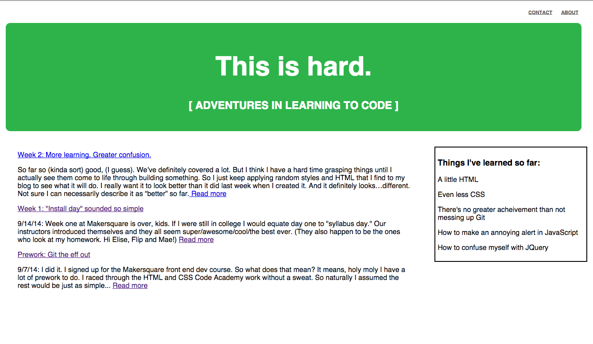

So far so (kinda sort) good, (I guess). We’ve definitely covered a lot. But I think I have a hard time grasping things until I actually see them come to life through building something. So I just keep applying random styles and HTML that I find to my blog to see what it will do. I really want it to look better than it did last week when I created it. And it definitely looks…different. Not sure I can necessarily describe it as “better” so far.
We dove head first (at 100 miles per hour) into JQuery in class. It’s one of those things that I can sit and think “I totally get this” until I try to do it outside of class on my own and them I’m definitely like “Nope, nope, nope. Definitely don’t understand.” I spent about 4 hours at a coffee shop with Juliana and Jonathan trying to get through all of our homework exercises. After a while I started to feel like I was totally getting it, and then we reached the last exercise and I had no idea what I was doing all over again. Funny how learning something totally new can do that do you.
Here’s the update on the blog look this week! It’s better than nothing. (I guess?)
Nice right? What I'm hoping to learn next week? Styling. I'm still totally into learning how to make things look good. (My fear is design school is my only hope.)